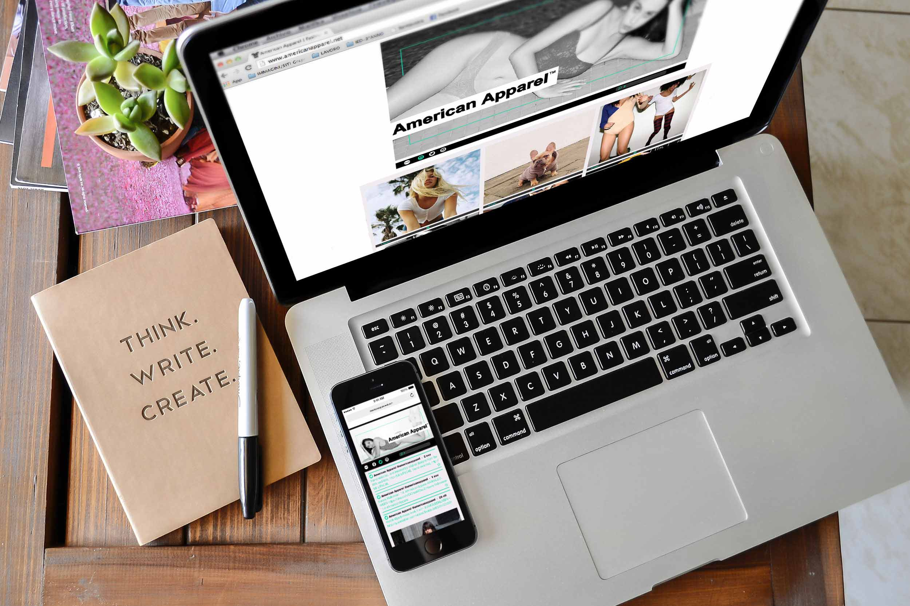

AMERICAN APPAREL
This is a design responsive project done during the course of Interaction Design at European Institute of Design, IED in Milan. www.americanapparelweb.com is a Social Stream site that is an portal aggregator of all social contents posted on the pages and profiles of brand chain clothing AMERICAN APPAREL. The portal is easy and intuitive for the user and allows the consult with a simple click of Facebook, Instagram and Twitter.
The site consists of a Home that collects all contents of these three social together, in chronological order, and by other three pages, one for each social.
COURSE
Interaction Design / IED
YEAR
2015
the portal is easy and intuitive and allows to consult
facebook, instagram and twitter.
